Stormens Herrer
De var kanskje de første av Skaperne (the Makers) Skaperne. De kartla havene og stjernene. De la elementene i lenke etter sin vilje. De bygde mektige skip og flygende borger, seilte ut fra hjemøya si og erobret. Alle som sto imot dem, ble gjort til aske og glass og slagg.
Stoltheten til Stormens Herrer (Tempest Lords) var fortjent, men hovmodet deres førte til fallet. De forsøkte å rive hele hjemlandet sitt løs fra jorden, for å la det sveve over verdenen de hersket over.
De mislyktes. Katastrofen fulgte.
Havene kokte og spydde ut redsler.
Ild regnet fra himmelen. Hovedstaden deres på øya sank under bølgene, og ryggraden i riket deres ble knust. Borgerkrig brøt ut. Koloniene gjorde opprør.
Stormens Herrer som overlevde, ble spredt for alle vinder. Noen prøvde å gjenreise riket, men fikk en voldsom ende for hånden til rivaler eller vordende undersåtter.
Snart var det bare noen få av Stormens Herrer igjen, gåter selv blant de andre Skaperne.
En av disse overlevende, Stormfangeren (Stormcatcher), tok seg frem til Sletten (the Flats) Sletten, forbi selv de fjerneste av rikets gamle utposter. Der, mellom fire andre skapernasjoner, bygde hun tårnet sitt. Og da redslene fra Tingene Der Nede (the Things Below) Tingene Der Nede ble sluppet løs over verden, var Stormfangerens tårn – det folk nå kaller Tårnruinen (the Ruined Tower) Tårnruinen – den siste av Skapernes enklaver som falt.
Språk og navn
Skriften til Stormens Herrer var ideografisk (tegnene står for ideer, ikke lyder), og de talte et urgammelt språk – alle som hørte det, forsto det som sitt eget morsmål. Derfor gjengis navnene til Stormens
Herrer som beskrivelser, titler eller ærestitler.
Eksempler på navn: Saltdrikker, Øyne-Som-Lyn, Fjernboer, Fiendehammer, Lynet-Er-Hennes-Spyd, Hans-Smil-Er-En-Havn, Sinn-Som-Ild, Månetaler, Åreknekker, Regnjager, Bølgestiller, Gnistspytter, Bygetaler, Stjernefinner, Høyere-Enn-Master, Tordenrøst, Bølgeskjærer, Veimaker, Vindvandrer
Når andre Skapere snakket eller skrev om dem, brukte de sitt eget tungemål. Vindvandrer ble kalt Vetrodokha av De Grønne Herrene (Green Lords) De Grønne Herrene og Avaelkerzhaer av Steinens Herrer (Stone Lords) Steinens Herrer.
Kroker
- Et forferdelig uvær drar forbi, med en himmeløy svevende i stormens øye
- En lærd tror at Stonetop skjuler et skattkammer av artefakter fra Stormens Herrer
- Kultister leter etter et planetarium med makt til å endre stjernene, for å fremskynde en konjunksjon som vil sette herren deres fri
- Banditter graver frem et våpen fra Stormens Herrer og truer Stonetop med det
- En hdour Åsfolket prøver å vekke til live en forglasset Skaper
Temaer
Velg, eller slå .
| 1 | Elementkrefter og urgammel makt: brukt og temmet, kanskje ufullkomment |
|---|---|
| 2 | Stormer: torden og lyn, vrede og raseri, makt sluppet løs |
| 3 | Himmelen: vær og skyer, himmeløyer, stjerner og himmellegemer |
| 4 | Sjøfart: hav og skip, navigasjon og utforsking |
| 5 | Maskiner og innretninger, aetherium og lagret energi |
| 6 | Nysgjerrighet/eksperimentering/ oppfinnelser/hovmod |
| 7 | Tap av kontroll: uventede følger/bersærkraseri/katastrofal svikt/eksperimenter ute av kontroll |
| 8 | Et sammenbrutt rike: erobrende hærer, kolonier, plyndring, tapt glans, harme |
| 9-12 | Laget for kjemper, og slå igjen |
Steder
Velg, eller la noen slå Skjebneterningen.
| 1-3 | Etterlatte spor etter dem (se nedenfor) |
|---|---|
| 4-6 | En ruin |
Etterlatte spor
Velg, eller la noen slå Skjebneterningen.
| 1 | Et sted som bærer arr etter tøylesløs makt (neste spalte) |
|---|---|
| 2 | Rester av et skip eller en himmeløy (neste side) |
| 3-4 | Gåtefulle byggverk (neste side) |
| 5 | En elementånd av himmel, storm, vær osv.; bundet og tjoret |
| 6 | Ruiner etter andre Skapere eller Gravhaugbyggerne (Barrow Builders) Gravhaugbyggerne: sprengt, knust, forglasset |
Arr etter tøylesløs makt
For eksempel:
- Et krater, full av lynrør og glasskår
- Et fraktalt, forgrenet mønster etset inn i en bar steinflate
- En runerisset menhir eller en stor klump skaperglass Steinens Herrer, der en grunnleggende lov eller kraft (tid, tyngdekraft, rom, lys osv.) er forvridd i nærheten
- En gold strekning med glasstein, merkelig farget og alltid varm
- De forglassede Forglassing restene av en Skaper, et monster, en liten hær osv. Grove glassformer som antyder hva de en gang var, lynfrosset i tiden Steder med arr etter slik makt kan godt være radioaktive Stormskydrikk, hjemsøkte steder Døden og de udøde og/eller fordervet av Tingene Der Nede Tingene Der Nede.
Rester av et skip eller en himmeløy
For eksempel:
- Et skipsskrog, nesten helt begravd men på et vis fortsatt intakt
- Et revet seil av nett av aetherium Aetherium, surret fast til et rustent metallkors
- Underlige gjenstander, spredt rundt og begravd for lenge siden: en sammenkrøllet messingsylinder, en etset metallskive, et overdimensjonert skipsratt, et ror osv.
- En steinknaus av fjell som er fremmed for terrenget rundt, vippet i en underlig vinkel
- En sprukken granittblokk, stor som kornlåven og gjennomtrukket av aetherium, som svever en meter over bakken og snurrer sløvt rundt
- Blokker av bearbeidet stein: knust, begravd og spredt, som et barneleketøy kastet ned fra umulige høyder
Gåtefulle byggverk
For eksempel:
- Jernspir, som hule, rustne trær, satt i en linje tvers over landskapet
- En svart kube på størrelse med et hus; når lynet slår ned, lyser jorden opp i kilometervis med glødende linjer som falmer i løpet av noen minutter
- Steinsokler langs en ås, noen av dem med to meter høye skulpturer på toppen, som tulipaner, som snurrer i brisen
- Kobbersylindre, hver kanskje to og en halv meter høy og dekket av irr; mesteparten begravd i hvit og kalkholdig jord
- Megalitter, risset med ideogrammer som beskriver stjernenes bevegelser
- En bronseplate på en steinhelle, det eneste som skiller seg ut på mils avstand; uberørt av lav; dypt etsede ideogrammer begynner med frasen: «Dette er ikke et hedersted»
En ruin
Velg eller slå for temaer, struktur, formål, arkitektoniske elementer og tilstand. Legg ruinen i et passende terreng (se Sletten for Sletten og Sør-Manmarch for Sør- Manmarch (South Manmarch), men Stormens Herrer fór vidt omkring). Befolk den med etterlatte spor Steder, artefakter artefakter og/eller farer Stormskydrikk fra Stormens Herrer eller den aktuelle regionen.
| 1-2 | Klynge av mindre bygninger rundt et sentralt trekk |
|---|---|
| 3 | Enkelt, større bygning (blokk, kuppel, ziggurat osv.) |
| 4 | Bunker/hvelv hogd inn i fjellet |
| 5 | Plattform/amfiteater/terrasse(r) |
| 6 | Tårn/spir |
| 7-9 | Himmeløy, styrtet/gått på grunn (og slå igjen) |
| 10-11 | Himmeløy, svevende men forankret/ fastlåst over et bestemt sted (og slå igjen) |
| 12 | Himmeløy, som driver fritt over landskapet (og slå igjen) |
| 1-2 | Bolig (hjem, brakke, sovesal osv.) |
|---|---|
| 3-4 | Infrastruktur (sisterne, kloakk, fyrtårn, havn osv.) |
| 5-6 | Lager (hvelv, batterier, lagerhus, bibliotek, museum osv.) |
| 7-8 | Produksjon (generator, verksted, skipsverft, fabrikk, gård osv.) |
| 9-10 | Studier/eksperimentering (laboratorium, observatorium, planetarium osv.) |
| 11-12 | Gåte (magisk innretning, kunstnerisk verk osv.) |
| 1-2 | Metallbjelker/kabler/gitterverk/fagverk |
|---|---|
| 3-4 | Åpne rom: sjakter, atrier, hvelvede tak, utsiktspunkter, vinduer, takvinduer |
| 5-6 | Kraftlinjer: aetheriuminnlegg, runer, ledninger, knutepunkter, strømmer |
| 7-8 | Stiliserte mosaikker/statuer: geometriske mønstre, fraktaler, himmellegemer, englelignende vesener, skip |
| 9-10 | Messingbeslag, rør og pumper, vann og damp, tannhjul og svinghjul |
| 11-12 | Vertikalitet: bautasteiner, menhirer, obelisker, tårn, spir, master |
De fleste skaperruiner er laget for kjemper – folk som er to eller til og med tre ganger så høye som mennesker – men ofte med mindre rom, ganger og lignende for tjenerne deres.
| 1-4 | Knust og lagt øde av tid, ulykke eller hærverk; mest begravd, gjengrodd, sammenrast; formålet ugjenkjennelig |
|---|---|
| 5-8 | Smuldrende, stort sett begravd, gjengrodd eller skjult |
| 9-10 | Begravd, gjengrodd eller skjult, men stort sett intakt |
| 11-12 | Fullt synlig og merkelig godt bevart |
For flere eksempler, se Tårnruinen Tårnruinen.
En av spillerpersonene er på vei til Titanbein (Titan Bones) Titanbein, og jeg vil gjerne ha en viss formening om hva som finnes der ute. Jeg tror det skjuler en ruin etter Stormens Herrer, trolig en gang knyttet til Stormfangeren og det som nå erTårnruinen Tårnruinen.
Jeg slår 3 for tema («himmelen: vær og skyer ...»), 4 for struktur («bunker/ hvelv»), 3 for formål («infrastruktur») og 11 for arkitektoniske elementer («vertikalitet»). Så slår jeg 5 for tilstand («stort sett begravd ... skjult»). Jeg grunner litt og kommer frem til dette:
Stormfangeren reiste et spir på Titanbein, som et fyrtårn, med en værhane av aetherium på toppen som styrte været. Da Steinens Herrers opprørske tjenere angrep, tok tårnets vokter værhanen og gjemte seg under spiret. Spiret raste, og vokteren ble fanget. Alt som er igjen, er spredte steiner og et sirkelrundt fundament. Og under århundrer med jord og steinras finnes en låst fallem. Den avdekker en vindeltrapp, en dyp sjakt, en intakt kjeller, et skjelett og en værhane av aetherium.
 Aetherium
Aetherium
En legering av kobber og lyn. Rent aetherium er lett, mykt og formbart (omtrent som tinn), men Stormens Herrer og Essens Herrer (Forge Lords) Essens Herrer kunne legere det videre eller bearbeide det med magi så det fikk et vidt spekter av egenskaper og bruksområder.
Velg eller slå for form og kjennetegn.
| 1-3 | Råmateriale (barre/trådspole/ stang/plate/lamé/skår osv.) |
|---|---|
| 4-5 | Gåtefull form (torus/kule/rør/ ring/runer osv.), formålet uklart |
| 6-7 | Hverdagslig gjenstand (redskap/kar/ lykt osv.), men kanskje ikke gjenkjent som det |
| 8-9 | Kunst eller pynt (juvel/statue/ innlegg/halsring/amulett/ring osv.) |
| 10 | Klær/rustning (kappe/tunika/forkle/ kyrass/brigantin osv.) |
| 11 | Våpen (spyd/pil/sverd/slegge/ skjold/trefork/stav osv.) |
| 12 | Byggverk (portbue/fagverk/bjelke/ dør/plater/rør osv.), sannsynligvis ubevegelig |
Vurder å slå for å avgjøre størrelse/skala.
| 1 | Betagende vakkert |
|---|---|
| 2 | Hardt og sterkt som bronse |
| 3 | Absorberer/lagrer/utlader/ omformer en elementkraft |
| 4 | Demper/frastøter/styrer/hindrer et bestemt element/en bestemt kraft |
| 5 | Vibrerer på måter som påvirker ånder/magi |
| 6 | Ekstremt lett/svever/trosser eller snur tyngdekraften |
| 7 | Stemmer seg inn på en annen gjenstand/et annet sted, for kommunikasjon/oppsporing |
| 8 | Slå to ganger |
| 9 | Ustabilt, tilbøyelig til utlading/svikt (farlig), og slå igjen |
| 10 | Forholdsvis mykt/formbart/smidig (grov) |
| 11-12 | Slå igjen med , men det blir ustabilt og/eller mykt (som ovenfor) etter enhver alvorlig bruk |
Å lage aetherium
En kløktig arkanist kan gjenoppdage prosessen for å lage aetherium. For å gjøre det, må du …
Når du oppfyller alle kravene, kan du gjøre en pung med kobbermynter (Verdi ◇
0) og de rette kjemikaliene (Verdi 0) om til en barre eller et støpestykke av rent aethe-◇ rium (magisk, grov, muligens farlig,
Verdi 1 for de-som-vet). Prosessen er risikabel; du Trosser Faren hver gang du gjennomfører den.
For å gi aetherium et av kjennetegnene ovenfor trenger du tilgang til i det minste en skatt av kunnskap fra Stormens Herrer eller Essens Herrer. Utover det, Legg en Plan med spillederen.
bygdeforbedring
Aetheriumdigel
Krever alt det følgende:
Når du merker alle kravene, legg «Aetheriumdigel» til på listen over Ressurser og på kartet. Så lenge dere handler med aetherium med verden utenfor, øk Velstand med 1.
Fra nå av er små mengder rått aetherium (magisk, Verdi 1) vanlig å få tak i i Stonetop, og du har fordel når du skal Handle og
Bytte til deg aetheriumgjenstander med særlige kjennetegn (+2 Verdi).
Artefakter
 Diverse skatter
Diverse skatter
- En liten klump aetherium (Verdi 0 for de fleste, Verdi 1 for de-som-vet)
- Et overdimensjonert spydblad av aetherium, ◇ sløvt og mykt (uhåndterlig, grov, Verdi 1)
- En stor messingmedaljong med en nål inni som peker mot et bestemt sted etter Stormens Herrer (Verdi 2)
- Noen ◇◇ ruller med seilduk, et ukjent materiale men svært slitesterkt (Verdi 2)
- Et tordenvær fanget i en stor ◇◇ flaske av skaperglass Steinens Herrer, forseglet med aetherium (farlig, Verdi 3)
- Noen anløpne sølvmynter fra riket til Stormens Herrer (Verdi 1 for de fleste, Verdi 3 for den rette samleren)
- En kodeks av tynne metallark, ◇ preget med stjernekart og ideogrammer fra Stormens Herrer (Verdi 3)
- En bronseplate på størrelse med en vegg, som viser et kart over hele riket til Stormens Herrer (ubevegelig, Verdi 4)
Aetheriumurne
Lokket holdes fast uten noen synlig grunn.
Det krever litt innsats å lirke det opp, og det smekker ivrig tilbake på plass.
Når urnen er åpen og tom, trekker den rå elementkraft inn i seg slik en magnetstein trekker jern. Med lokket på er kraften trygt lagret. Hvis urnen blir skadet eller bulket (ikke vanskelig), slipper den lagrede kraften ut, voldsomt.
Bronsering
◇, magisk, ildfast, timer Omtrent 20 cm i diameter, 2,5 cm tykk hele veien rundt, svidd og innsmurt med aske. En knapp stikker ut, med et tegn fra Stormens Herrer som kanskje betyr «sta».
Når du finner ringen, har den nok kraft til å virke i timer.
Når du trykker på knappen, låser ringen seg fast der den er, og trosser tyngdekraften. Den rikker seg rett og slett ikke. Virkningen opphører hvis ringen bøyes eller brekkes, eller når den går tom for kraft.
Det finnes ingen åpenbar måte å avslutte virkningen tidlig på. Når ringen går tom for kraft, spretter knappen ut og virkningen opphører.
Når du varmer ringen i en esse eller brennovn i omtrent åtte timer, får den en times bruk (opptil 3 timer).
Svevende skjerf
En lengde blåhvit lamé, kanskje 15 cm bred og knapt to meter lang, som slynger seg i luften. Som et belte, men for noen langt større enn deg.
Når du surrer skjerfet godt rundt livet, holder det deg oppe når du faller – du faller aldri fortere enn om du hadde falt din egen høyde.
Sølvaktig stemmegaffel
Når du slår denne stemmegaffelen mot en hard overflate, gir den fra seg en høy tone i omtrent ett minutt. Magiske virkninger og vesener i nærheten (rekkevidde, område) blir synlige: skjelvende, vibrerende, forvrengte. Lyden trekker til seg oppmerksomheten til alle ånder og magisk følsomme vesener i milevis omkring.
Stormskydrikk
Et glassampulle med mørkegrå væske, som velter rundt og er gjennomtrukket av gnister.
Når du drikker en stormskydrikk, raser lynet gjennom deg. Ta skade (ser bort fra rustning) og merk en svakhet. Hvis du overlever, hold 3 Storm.
Så lenge du holder noe Storm, kan du ikke føle smerte eller frykt, skille venn fra fiende, snakke sammenhengende eller vise tålmodighet eller omtanke. Legg Storm til Rustningen din, og nærkamp- og kasteangrepene dine gjør +Storm skade (+bråkete, +kraftfull).
Når du reduserer noen eller noe til 0 HP, mist 1 Storm.
 Små arkana
Små arkana
Velg 1 eller la noen slå.
| 1 | En halvveis begravd plate |
|---|---|
| 2 | En rikt brodert kappe |
| 3 | Et korrodert spydblad |
| 4 | En stav med kobberbånd |
| 5 | Et underlig fremkomstmiddel |
| 6 | En bue uten streng |
Store arkana
Disse kan godt være knyttet til Stormens Herrer.
- Den Asurblå Hånden Den Asurblå Hånden
- De Usigelige Ordene De Usigelige Ordene
- Stormmerkene Stormmerkene
Farer
Monstre og vesener
- En tordendrake Sletten eller luglfsk Redselselva, tiltrukket av aetherium
- Spøkelser Døden og de udøde eller gjengangere Døden og de udøde, ofre for Stormens Herrers eksperimenter, hjerteløshet eller vrede
- En arkont Urkrefter som sørger for at en artefakt fra Stormens Herrer forblir ubrukt
- En elementånd Villmarkas ånder eller en grunnkraft Urkrefter, bundet til en innretning eller et kunstverk
- Et urvesen Urkrefter eller noe fordervet av Tingene Der Nede, forglasset Forglassing og holdt i stillstand.
 Stråling
Stråling
Noen ganger slapp Stormens Herrer løs en så forferdelig makt at den forgiftet alt den berørte: jord, bein, stein, metall. Forgiftet dem alle så dypt at de nå, fremdeles, århundrer på århundrer senere, forgifter alt som kommer nær.
Slike forgiftede steder er ofte fordervet av Tingene Der Nede. Men selv når de ikke er det, er de farlige.
- Pek ut planter eller dyr som er forkrøplede og underlige
- Få huden deres til å klø, få dem til å føle seg uvel
- Påfør en svakhet som ikke vil gå over
- La symptomer dukke opp (eller komme tilbake) timer eller dager etter eksponeringen
- La symptomer henge ved eller forverres, kanskje i flere måneder
Spillerpersoner eller SLP-er som utsettes for slik stråling, er utsatt for å utvikle en forferdelig, tærende sykdom måneder eller år senere. Skriv den opp som en trussel (en plage).
Forglassing
Noen få av Stormens Herrer kunne mane frem et kraftstøt så rått og mektig at det gjorde alt det berørte, om til glass.
Det var farlig selv for dem å bruke, men ingen fiende kunne stå imot det.
Det er mulig at det fremdeles finnes en innretning som kan slippe løs denne typen makt. I så fall, behandle den som en trussel (en MacGuffin; Instinkt: å friste folk til å bruke den). Den ville
kreve enorme mengder energi og innebære ekstraordinære risikoer.
Når du blir truffet av et forglassende støt, reduser HP-en din til 0 og slå +CON: på 10+ får du bare forferdelige brannskader og vil snart være På Dødens Terskel; på 7-9 blir du og eiendelene dine gjort om til taggete glass, men du kan kanskje gjenopprettes; på 6- dør du, men liket ditt, sjelen din og eiendelene dine blir også gjort om til taggete glass – skulle forglassingen bli opphevet, er det som om du slo 6- På Dødens Terskel.
Forglassing kan oppheves, men du må bestemme hvordan det gjøres. Kanskje innebærer det:
- enorme mengder makt og stor risiko;
- en sympatisk forbindelse til offeret, eller til det som forglasset dem i utgangspunktet;
- inngripen fra en mektig gud Guder og religion eller et urvesen Urkrefter;
- å utgyte slektningenes livsblod over det taggete glasset;
- en overføringstrylleformel, der noen andre blir forglasset i stedet;
- en åndevandrer som setter den forglassede sjelen fri og leder den til et passende kar;
- noe forskjellig for hvert offer, eller for hver kilde til forglassing;
- en kombinasjon av det ovenfor; eller
- noe helt annet.

ElementvirvelSe for deg en filigrankule av aetherium, kanskje 15 cm i diameter, med en glødende gnist som virvler i midten. Denne innretningen – kalt en matrise – binder en elementånd og absorberer en bestemt kraft, som ånden kan bruke til å manifestere en virvlende malstrøm.
En ånd som er bundet til en matrise, må adlyde enhver ordre gitt på det urgamle språket til Stormens Herrer. Siden få levende kan gi dem slike ordrer, vil matriser man støter på, trolig handle etter ordrer gitt for århundrer siden.
Kraft og størrelse: Hver matrise absorberer en bestemt type kraft, og virvelens nåværende HP gjenspeiler dens nåværende kraft.
Når en virvel får eller mister HP, endres også størrelsen, rustningen og skaden. Ved 0 HP oppløses den, og matrisen faller til bakken, livløs til den absorberer mer HP.
Velg eller slå for å avgjøre en virvels startstørrelse, HP, Rustning og Skade.
| 1-4 | 1 til 5 bitteliten; Rustning 1; Skade (hånd) |
|---|---|
| 5-7 | 6 til 11 liten; Rustning 2; Skade (hånd) |
| 8-9 | 12 til 18 Rustning 2; Skade (hånd, tett) |
| 10-11 | 19 til 23 stor; Rustning 3; Skade (hånd, tett, rekkevidde, kraftfull) |
| 12 | 24 til 28 enorm; Rustning 3; Skade (hånd, tett, rekkevidde, område, kraftfull) |
Å angripe matrisen: En matrise har bare 3 HP selv. Hvis den reduseres til 0 HP, slipper ånden inni løs og gjør virvelens nåværende skade (+område, ett rekkeviddetrinn lenger enn normalt).
Når en SP prøver å treffe matrisen inne i en aktiv virvel, gjelder virvelens Rustning. Fortell dem også kravene og/ eller konsekvensene, for eksempel:
- Du får ulempe når du Krysser Klinger/ Skyter Løs/gjør skade
- Du må skape eller vente på en åpning der matrisen ligger blottet
- Du må komme tett innpå/la den sluke deg
- Du trenger et lengre/tyngre/magisk våpen
- Du risikerer å miste/ødelegge våpenet ditt
- Du blir utsatt for angrepet dens, uansett hva
Velg alternativer ut fra virvelens natur, spillerpersonens våpen og resten av posisjonen deres i fiksjonen. Jo større virvelen er, desto vanskeligere er det å treffe matrisen.
Jordvirvel
Skade knuse (skade og merkelapper etter HP)
Særlige egenskaper halv skade fra stikk- eller hoggvåpen (med mindre de er magiske)
Instinkt å velte og undergrave
- Manifestere en kvernende masse av jord, sand og stein i nærheten
formløs, gretten, klossete
HP varierer; Rustning etter HP, +1 (laget av stein)
• Klemme fast en mindre fiende (+gripende)
• Male en fastklemt fiende, og gjøre skade med fordel (+blodig)
• Ødelegge en solid gjenstand eller et byggverk (koster HP)
• Få jorden til å skjelve (+område, +kraftfull, ett rekkeviddetrinn lenger enn normalt; koster HP)
En jordmatrise absorberer kraft fra trykk, stump kraft og seismisk aktivitet.
Den får HP av en uke begravd under jord eller stein, av å ligge på bunnen av et steinskred eller et ras, eller av å berøre bakken under et kraftig jordskjelv (ikke ett den selv har skapt).
Når du slår en jordmatrise med et stumpt angrep, tar den ingen skade. Hvis slaget var kraftfullt og virvelen har 10 HP eller mindre, får den 1 HP. (Virvelen selv har ingen slik immunitet, så bare slå løs!)
Ildvirvel
Skade flammer og ild (skade og merkelapper etter HP, +farlig)
Særlige egenskaper ildfast; skades bare av magiske angrep, vann eller kvelning
Instinkt å fortære
- Sette fyr på brennbare ting i nærheten
formløs, intens, aggressiv
HP varierer; Rustning etter HP
• Manifestere en virvel av ild, glør, røyk og aske i nærheten
• Slokke branner og absorbere kraften deres (nær, område)
• Sluke en mindre fiende (+blodig, +ser bort fra rustning)
• Slynge flammer (+nær; koster HP)
• Hoppe over en barriere (men mister HP)
En ildvirvel absorberer kraft fra varme og flammer. Den får HP av å tilbringe en dag i en ovn eller en time i en esse eller brennovn, eller av å absorbere en rasende brann.
Når du angriper en ildvirvel eller matrisen dens med magisk ild eller varme, tar den ingen skade. Hvis virvelen har 18 HP eller mindre, får den i stedet HP.
Lynvirvel
Skade støt (skade og merkelapper etter HP)
Særlige egenskaper flyr; skades bare av magiske angrep
Instinkt å slå ut
- Manifestere en knitrende lynsøyle
formløs, frekk, arrogant
HP varierer; Rustning etter HP
• Flytte seg, utrolig raskt (koster 1 HP)
• Lamme noen den gir støt (koster HP)
• Slynge en lynstråle (+nær, +kraftfull, +bråkete, ser bort fra rustning; koster HP)
• Rive lynet ut av ubevoktet aetherium og få HP
En lynvirvel absorberer kraft fra, vel, lyn. Når den blir truffet av lynet (vanlig eller magisk), får den HP i stedet for å ta skade.
Vannvirvel
Skade banke løs (skade og merkelapper etter HP)
Særlige egenskaper skades bare av magiske våpen, kulde eller kraftfulle stumpe angrep
Instinkt å tilpasse seg, flyte og omstille seg
- Manifestere en kvernende bølge av vann den berører
- Forsvinne ned i/bryte ut av en vannmasse
- Sluke en mindre fiende (+gripende, se nedenfor)
- Velte forbi fiender og rive dem over ende (+område, +kraftfull, koster HP)
- Bevege seg over en porøs overflate (koster HP)
formløs, ubønnhørlig, følelseskald
HP varierer; Rustning etter HP
En vannmatrise absorberer kraft fra strømmer, tidevann, bølger og fallende vann. Den får HP av noen dager i en rennende bekk, noen timer i en fossende elv eller noen minutter i stryk eller en stor foss.
Når du blir slukt av en vannvirvel, hold Pust. Når du gjør et trekk mens du er slukt, og trekket innebærer et slag, bruk 1 Pust eller merk en svakhet etter slaget. Hvis du ikke kan gjøre noen av delene, drukner du og er På Dødens Terskel.
Vindvirvel
Skade piskende grus/rusk (skade og merkelapper etter HP, men med ulempe)
Særlige egenskaper flyr, skades bare av magiske våpen, salt eller bly
Instinkt å leke
- Manifestere en virvel av kvernende vind, grus og rusk
formløs, rastløs, lunefull
HP varierer; Rustning etter HP
• Sluke en mindre fiende (+gripende)
• Bære en slukt fiende til værs (koster HP)
• Slynge gjenstander (+nær; koster HP)
• Flykte når den blir skadet, skremt eller lei
En vindmatrise absorberer kraft fra luft i bevegelse. Den får HP av uker utsatt for vanlig vær, en time i sterk vind eller et minutt eller så i en tornado.
Når du treffer en vindvirvel med salt eller bly, tar den skade av en håndfull, skade av en gjenstand, og ◇ skade av en ◇◇ gjenstand eller mengde.